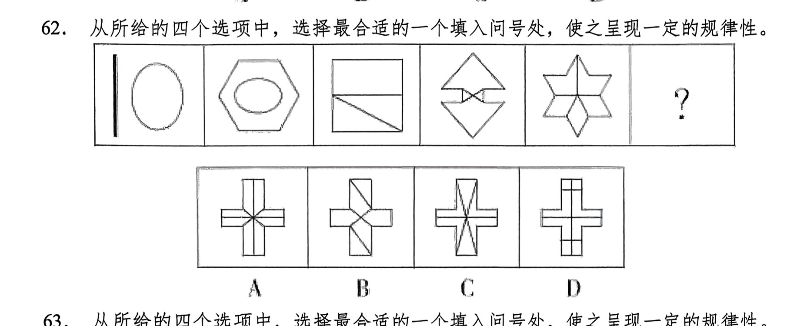
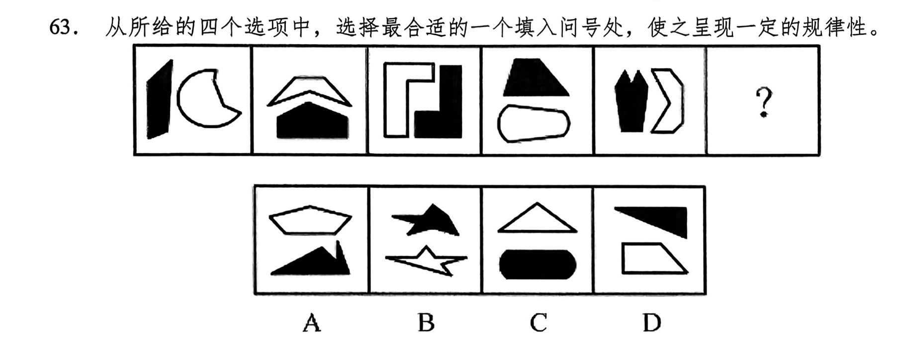
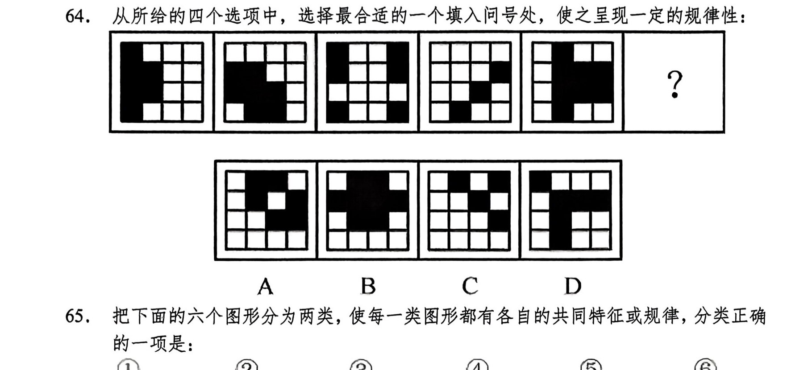
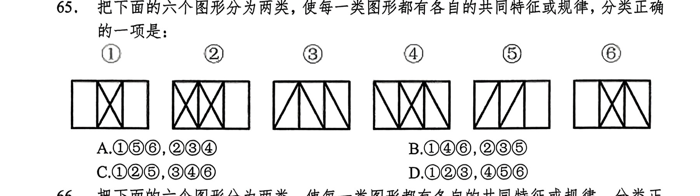
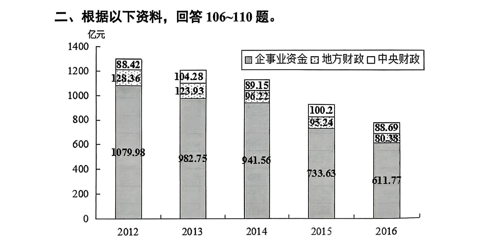
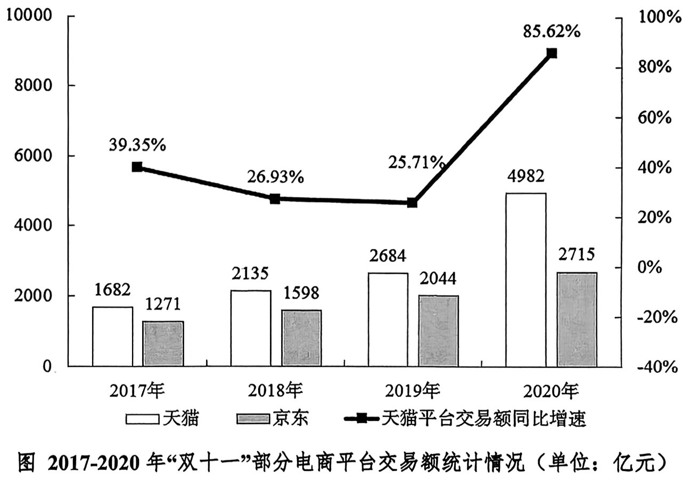
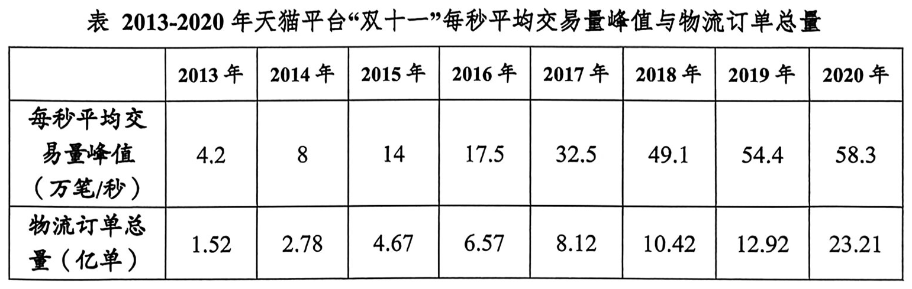

"第二个结合"是又一次的思想解放，让我们能够在更广阔的文化空间中，充分运用中华优秀传统文化的宝贵资源，探索面向未来的理论和制度创新。下列对"第二个结合"的理解正确的是（ ）。
①其实现过程，就是将中华民族的"根脉"与马克思主义的"魂脉"扭在一起、各行其"脉"，形成新的理论优势
②不是简单的"拼盘"，而是马克思主义同中华优秀传统文化相"结合"的深刻"物理反应"，形成中国式现代化的文化形态
③是我们不断吸取思想精华，推动马克思主义中国化时代化、开辟和发展中国特色社会主义的必由之路
④打开了创新空间，不断赋予马克思主义新的中国内涵、中国特色，让马克思主义成为中国的，中华优秀传统文化成为现代的
A.①② B.②③ C.②④ D.③④
用"九个指头和一个指头的关系"比喻成绩与不足哪个是主要的哪个是次要的，这种思想方法可以帮助我们在观察和处理问题时分清主流与支流、整体与局部、本质与现象。这是因为（ ）。
①事物的性质主要是由取得支配地位的矛盾主要方面决定的
②矛盾的双方互相依存、互相影响、互相转化
③应该抓住主要矛盾和矛盾的主要方面
④矛盾无时无处不在，具有普遍性和客观性
A.①③ B.②③ C.①④ D.②④
网络空间不是"法外之地"。网络空间同现实社会一样，既要提倡自由，也要保持秩序。大家都应该遵守法律，明确各方权利义务。公民必须合理合法行使自己的权利，否则就要受到法律的制裁。这主要表明在我国（ ）。
A.公民应坚持法律面前人人平等的原则
B.任何公民都应该先履行义务，后享受权利
C.公民应坚持权利与义务统一的原则
D.公民要坚持个人利益与国家利益相结合
下列行为属于《中华人民共和国治安管理处罚法》规定的妨害公共安全的是（ ）。
A.醉酒人甲非法拦截公共汽车，影响汽车正常行驶
B.歌迷乙在未经允许的情况下强行进入演唱会现场
C.无业人员丙以反复纠缠的方式在繁华的步行街上乞讨
D.农民丁为防他人偷鱼而在其鱼塘四周私自安装了电网
下列关于人文常识的表述，不正确的是（ ）。
A.开创三省六部制和科举制的朝代是隋朝
B."民为贵，社稷次之，君为轻"是孟子民本思想的体现
C.提出"中庸"这一中国传统文化最高价值原则的人是孔子
D.严复翻译出版的《天演论》所宣传的主要思想是"师夷长技以制夷"
下列与人体有关的说法错误的是（ ）。
A.消化和吸收的主要场所是小肠
B.尿液中糖分过多可能是由于胰岛素分泌不足
C.分泌生长激素、促进人体生长发育的器官是垂体
D.人能看清远处和近处的物体是因为瞳孔的大小可以调节
下列词语内容对应不一致的是（ ）。
A.手足——兄弟 B.汗青——社稷
C.伛偻——老人 D.南冠——俘虏
唐代文学艺术的审美意识和审美趣味，与唐代的社会环境、时代精神息息相关。唐代的时代精神和宏大气象在李白浪漫主义诗作、王昌龄等人的边塞诗、王勃与陈子昂的散文中________。无论是李白的诗歌，还是边塞诗以及王维等人讴歌大自然的诗作，总体上都体现了那个强盛王朝积极向上的时代精神和帝国气概。
填入画横线部分最恰当的一项是：
A.屡见不鲜 B.可见一斑 C.一览无遗 D.司空见惯
要注意的是，随着中国经济增长从高速转为中高速，从规模速度型粗放增长转向质量效率型集约增长，从要素投资驱动转向创新驱动，许多经济指标之间的关联性也会伴随经济发展的新情况、新趋势、新特点发生改变。在此背景下，如果继续用传统的观念来看待和分析问题，继续用高速增长阶段的逻辑来解读经济指标和经济数据，无异于"________"。
填入画横线部分最恰当的一项是：
A.缘木求鱼 B.画地为牢 C.掩耳盗铃 D.刻舟求剑
大多数随机的基因突变对一个有机体既无好处也无坏处，它们以________的速度积累，反映两个共同祖先的现存物种的进化时间长短。相比之下，基因组某一特定部分突变率的加速，可反映出对一种突变的________选择，这种选择有助于有机体生存和繁殖，也使突变更有可能遗传给后代。
填入画横线部分最恰当的一项是：
A.稳定 积极 B.缓慢 合理
C.相似 主动 D.平稳 自然
中国共产党百年栉风沐雨、________，历程何其艰辛又何其伟大。我们要一往无前、顽强拼搏，让明天的中国更美好。路虽远，行则将至；事虽难，做则必成。只要有愚公移山的志气、________的毅力，脚踏实地，埋头苦干，积跬步以至千里，就一定能够把宏伟目标变为美好现实。
填入画横线部分最恰当的一项是：
A.筚路蓝缕 持之以恒 B.披荆斩棘 滴水穿石
C.矢志不渝 锲而不舍 D.高歌猛进 铁杵磨针
在信息泛滥的时代，某些情况下，________的真相会像谎言一样误导人，甚至比谎言更容易误导人。真相像________成无数碎片的镜子，每个人都认为自己看到的一小片是完整的真相。"后真相时代"的认知战，就是通过讲述"竞争性真相"，来改变作战对象和相关民众的认知，从而________地达成或辅助达成战争目的。
填入画横线部分最恰当的一项是：
A.片面 破碎 高效 B.截取 散落 隐秘
C.粉饰 割裂 巧妙 D.篡改 分解 秘密
基于历史机缘，西方国家率先迈入了现代化进程，在历史实践中以具体性、个别性和特殊性以及资本主义的全球扩张________了一种普遍性，并对非西方世界产生深刻而持久的冲击。但这种普遍性不是先天的，并无法________其在崛起过程中同样是立足某种特殊性的历史实质。可见，所谓普遍性也是历史建构的产物，而且要时时与具体、个别和特殊产生互动，不能________地成为一种教条。
填入画横线部分最恰当的一项是：
A.实现 遮蔽 一劳永逸 B.成就 摆脱 一成不变
C.创造 掩盖 理所当然 D.提供 取代 一以贯之
起源于中国的茶，是风靡世界三大不含酒精的植物性饮品之一。在漫长的历史长河中，人们不断认识并充分利用茶的药用价值，进而促进了药茶的发展，为中药代茶饮奠定了坚实的基础。最早的"药茶"含义，实际上是含有茶或不含茶而仿茶制成的方药，发展到现在，"药茶"的含义已经扩展为含有药物并用来治疗或保健的茶剂。药茶分为两类，即"以茶入药"和"以药代茶"。其中"以药代茶"为仿茶类药茶即中药代茶饮，其不含茶叶植物，但在制作时采用采、蒸、火焙的造茶方法，并且有明确的主治功能。
下列说法与文意不符的是：
A.茶的药用价值被人们认知已久
B.茶叶并不是"药茶"的必备要素
C."药茶"和茶叶的制作方法一致
D."药茶"的含义现在变得更为宽泛
年轻人对健康的追求和购买养生饮品的行为，其实无可厚非。有些人过着熬夜、饮食不规律的生活，又出于主观或客观的种种原因无法规律自己形成健康的作息，于是诉诸饮食渠道就成了他们挽救健康的一种尝试。然而养生饮品的存在，除了无法对健康产生多少正面影响外，还代偿掉了一部分所谓的"健康焦虑"——消费者们如果认为喝了养生饮品就可以无视熬夜的危害，就可能在“不健康生活方式和“虚假养生”的循环中，身体不断滑坡。
这段文字意在说明：
A.要理解年轻人购买养生饮品的行为
B.当下年轻人选择了错误的养生方式
C.养生饮品仅空有噱头并无实际功效
D.养生饮品无法帮助年轻人保持健康
随着数据量的增长，未来人工智能超级计算机能够解决很多以前没办法解决的问题。人工智能超级计算机给科学计算带来了巨大变革。比如，由于大多数物理规律可以表达为偏微分方程的形式，所以偏微分方程组的求解成为了解决科学计算领域问题的关键，而人工智能超级计算机无疑能在这方面助人类一臂之力。不仅如此，人工智能超级计算机还能帮助人们解决更多的科学问题，尤其是数学方面复杂方程求解的难题，人工智能超级计算机能变成一个趁手的工具，助力科学家发挥更大的创造力和想象力。
这段文字意在说明：
A.人工智能超级计算机可以帮助解决科学计算领域问题
B.人工智能超级计算机或在数学、物理领域大展身手
C.科学家可借助人工智能超级计算机进行更大胆的创造
D.人工智能超级计算机在计算方面具有无可比拟的优势
某手机厂商生产甲、乙、丙三种机型，其中甲产量的 2 倍与乙产量的 5 倍之和等于丙产量的 4 倍，丙产量与甲产量的 2 倍之和等于乙产量的 5 倍。甲、乙、丙产量之比为：
A.2∶1∶3 B.2∶3∶4 C.3∶2∶1 D.3∶2∶4
三行三列间距相等共有九盏灯，任意亮起其中的三盏组成一个三角形，持续 5 秒钟后换另一个三角形。那么如此持续亮，亮完所有的三角形组合至少需要多少秒？
A.380 B.390 C.410 D.420
某新型建材生产车间计划生产 480 个建材，当生产任务完成一半时，暂时停止生产，对器械进行维修清理，用时 20 分钟。恢复生产后工作效率提高了三分之一，结果完成任务时间比原计划提前了 40 分钟。问：对器械进行维修清理后每小时生产多少个建材？
A.80 B.87 C.94 D.102
把一个正方形的四个角分别切除一个等腰直角三角形，剩下一个长宽不等的矩形，若被切除部分总面积为 400 平方厘米，且切除的三角形的直角边的长度为整数，则所剩矩形的面积为多少平方厘米？
A.320 B.336 C.360 D.384
某果农要用绳子捆扎甘蔗，有三种规格的绳子可供使用：长绳子 1 米，每根能捆 7 根甘蔗；中等长度绳子 0.6 米，每根能捆 5 根甘蔗；短绳子 0.3 米，每根能捆 3 根甘蔗。果农最后捆扎好了 23 根甘蔗。则果农总共最少使用多少米的绳子？
A.2.1 米 B.2.4 米 C.2.7 米 D.2.9 米
某网店的甲商品定价为 300 元，乙商品定价为 500 元。小张以七折购买了甲商品，购买乙商品时参加了每满 199 元减 50 元的活动。小赵购买甲商品时在九折基础上又参加了每满 100 元减 10 元活动，则小赵通过以下哪种促销活动购买乙商品，其购买甲、乙两件商品总花销与小张一样？
A.减 50 元后打八折 B.直接打七折
C.打九折后减 120 元 D.直接减 120 元
世界石油价格上涨，导致油站供油不足。已知三辆油罐车分别运来 55/6、25/8、62/9 吨油，农忙季节农用机车急需用油，为支援生产，把三罐油平均分成若干等份，每份尽可能多，每台农用机车一次凭车牌号领取一份油，则至少可满足多少台农用机车的需求？
A.125 B.138 C.151 D.163
从所给的四个选项中，选择最合适的一个填入问号处，使之呈现一定的规律性。

从所给的四个选项中，选择最合适的一个填入问号处，使之呈现一定的规律性。

从所给的四个选项中，选择最合适的一个填入问号处，使之呈现一定的规律性：

把下面的六个图形分为两类，使每一类图形都有各自的共同特征或规律，分类正确的一项是：

压制性电子干扰是指使用干扰发射设备发射大功率干扰信号，使敌方电子设备的接收机或数据处理设备过载或饱和，或者使有用信号被干扰遮盖。
根据上述定义，下列行动不属于压制性电子干扰的是：
A.发射强激光照射敌军光电设备，使光电设备的传感器致盲甚至烧毁
B.在空中大量投放箔条，对雷达形成干扰屏障，掩护己方部队的作战行动
C.使用电磁脉冲武器产生强大脉冲功率，烧毁敌方通信设备中的电子元件
D.设置假目标强激光信号，欺骗敌方激光探测设备和激光制导设备
层递是用结构类似的语句抒发层层递进或递降的意思，层递句必须包含多于两种的事物，按照深浅、大小、轻重等顺序排列，使思维逐渐加深，情感逐步强化，从而加强语言的压服力和感染力。
根据上述定义，下列属于层递的是：
A.未战养其财，将战养其力，既战养其气，既胜养其心
B.帝者与师处，王者与友处，霸者与臣处，亡国与役处
C.知理而后可以举兵，知势而后可以加兵，知节而后可以用兵
D.源不深而望流之远，根不固而求木之长，德不厚而思国之理
人至察：则无徒
A.塘中鱼尽：白鹤起身 B.放虎归山：必有后殃
C.眉头一皱：计上心来 D.天下无难事：只怕有心人
茯苓膏：葛根粉
A.乳胶枕：蚕丝被 B.绿豆糕：荷花酥
C.铜钱草：琴叶榕 D.长江鲟：北极虾
从众效应 对于 （ ） 相当于 （ ） 对于 积少成多
A.三人成虎：长尾效应 B.进退维谷：暗示效应
C.众志成城：边际效应 D.齐心协力：拆屋效应

2016 年全国新发现矿产地 156 处。其中，油气矿产地 22 处。煤炭、锌矿、金矿和磷矿等重要矿产均获得较多的新增查明资源储量。2016 年，累计出让探矿权 1180 个，同比增加 22.9%；出让价款 109.86 亿元，同比增加 701.9%。累计出让采矿权 1844 个，同比下降 27.3%；出让价款 173.44 亿元，同比增长 97.5%。
2012-2015 年我国地质矿产勘查投资中，中央财政资金与企事业资金的比值最小的是：
A.2012 年 B.2013 年 C.2014 年 D.2015 年
2016 年全国新发现矿产地 156 处。其中，油气矿产地 22 处。煤炭、锌矿、金矿和磷矿等重要矿产均获得较多的新增查明资源储量。2016 年，累计出让探矿权 1180 个，同比增加 22.9%；出让价款 109.86 亿元，同比增加 701.9%。累计出让采矿权 1844 个，同比下降 27.3%；出让价款 173.44 亿元，同比增长 97.5%。
2016 年累计出让采矿权的单价约是探矿权的多少倍？
A.2.0 B.1.0 C.2.5 D.1.5


2016-2020 年天猫平台"双十一"交易额平均每年约为：
A.1100 亿元 B.2297 亿元 C.2538 亿元 D.2870 亿元
若 2020 年天猫平台"双十一"前三十钟每秒平均交易量平均值达到峰值的 60%，那么天猫平台"双十一"前三十钟交易总量约为：
A.10.5 亿笔 B.6.3 亿笔 C.1749 万笔 D.1049 万笔
下列说法正确的是：
A.2020 年天猫平台"双十一"物流订单总量比 2013 年翻了 4 番多
B.2014-2020 年天猫平台"双十一"每秒平均交易量峰值同比增速超过 50%的年份有 3 个
C.2017-2020 年天猫平台"双十一"交易额同比增速最低的年份，其京东平台"双十一"交易额占京东平台与天猫平台交易额合计的比重超过五成
D.2017-2020 年天猫平台"双十一"交易额年均增速超过京东平台